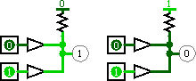

|
|
与/或/与非/或非门 |
| 库： | 门电路 | |||||||||||||||
| 引入版本： | 2.0 Beta 1 | |||||||||||||||
| 外观： |
|
行为
与门、或门、与非门和或非门各自计算输入对应的函数，并将结果输出到输出端。
默认情况下，任何未连接的输入都会被忽略——前提是该输入确实没有连接任何对象，连导线也没有。这样，可以插入一个 5 输入门但只连接两个输入，它将作为 2 输入门工作；这样就不必在每次创建门时都配置输入数量。
如果所有输入都未连接，则输出为错误值（E）。不过，有些用户更希望 Logisim 要求所有输入都必须连接，因为这更接近现实世界中的门电路。可通过 | 项目 | > | 选项… | 菜单项进入项目选项，选择 | 仿真 | 选项卡，并将未定义时的门输出
设置为未定义输入时报错
来启用此行为。
门的双输入真值表如下。字母E表示错误值，字母U表示浮空值。
|
|
|||||||||||||||||||||||||||||||||||||||||
|
|
|||||||||||||||||||||||||||||||||||||||||
简而言之，只要所有输入均为 0 或 1，这些组件就能按预期工作。如果某个输入既不是 0 也不是 1，即处于浮空（U）或错误（E）值，那么组件会将其同时视为 0 和 1：若无论将其视为 0 还是 1，输出都相同（例如 AND 门的一个输入确定为 0，另一个输入不确定），则输出该值；但如果输出会因将其视为 0 或 1 而改变，则输出为错误值（E）。
每个门的多位版本将对其输入逐位执行一位转换。
引脚（假设组件朝东）
- 西侧：
-
组件的输入。其数量由 输入数量 属性指定，位宽由 数据位宽 属性决定。
请注意，如果使用异形门，或门和或非门的西侧会呈弯曲形状。尽管如此，输入引脚仍排成一条直线。Logisim 会绘制短引线来说明这一点；如果导线略微越过短引线末端，Logisim 会自动认为这不是有意越过并加以修正。在“打印视图”中，除非这些短引线连接了导线，否则不会绘制它们。
- 东侧：
- 门的输出，其值根据上述当前输入计算得出。位宽由 数据位宽 属性决定。
属性
当组件被选中或正在添加时，数字键 0 至 9 可修改其 输入数量 属性，Alt-0 至 Alt-9 可修改其 数据位宽 属性，方向键可修改其 朝向 属性。
- 朝向
- 组件的方向（其输出相对于输入的位置）。
- 数据位宽
- 组件输入和输出的位宽。
- 门尺寸
-
决定绘制较宽还是较窄版本的组件。这不会影响输入数量，输入数量由“输入数量”属性指定。但是，如果选择了异形门，则会绘制带有
翼
的门，以容纳超出形状自然容纳范围的额外输入。 - 输入数量
- 决定组件西侧应有多少个引脚。
- 输出值
-
指示如何将逻辑假和逻辑真转换为输出值。默认情况下，逻辑假由低电压（0）表示，逻辑真由高电压（1）表示，但其中一个可以替换为高阻（
浮空
）值。这样可以实现线与和线或连接，如下图所示：左侧，缓冲器的输出值属性为高阻/1，电阻下拉至 0，实现线或行为；右侧，缓冲器的输出值属性为 0/高阻，电阻上拉至 1，实现线与行为。
- 标签
- 与门关联的标签内的文本。
- 标签字体
- 用于渲染标签的字体。
- 取反 x
-
如果为
是
，则输入在送入门之前会被取反。如果朝向为东或西，则输入从上到下计数；如果朝向为北或南，则输入从左到右计数。
手形工具行为
无。
文本工具行为
可编辑与门关联的标签。
返回 库参考